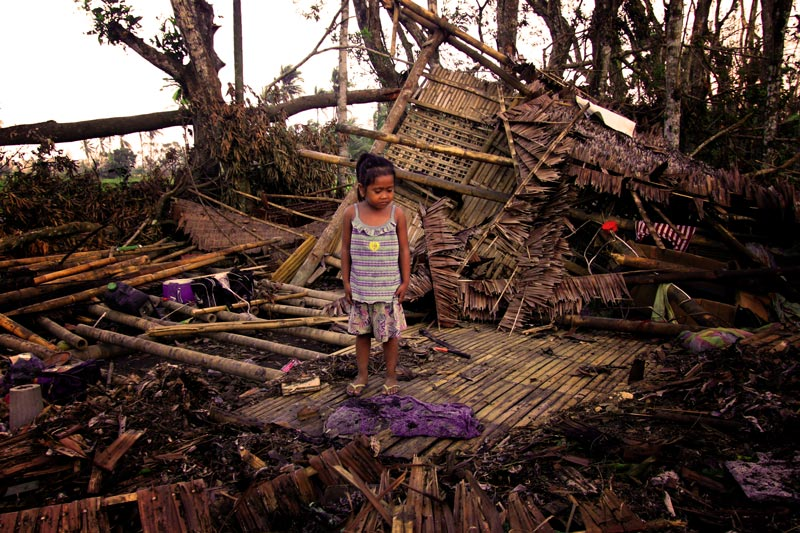
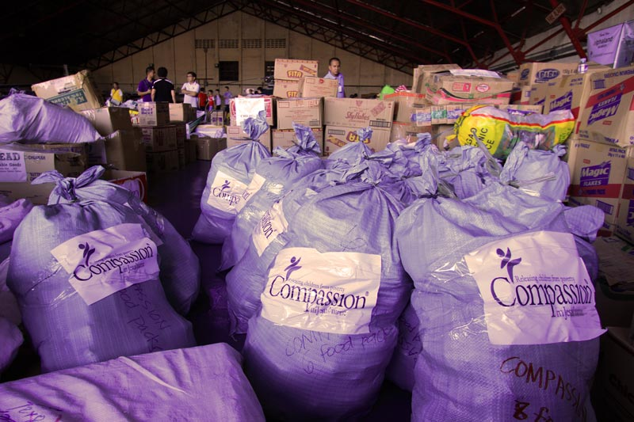
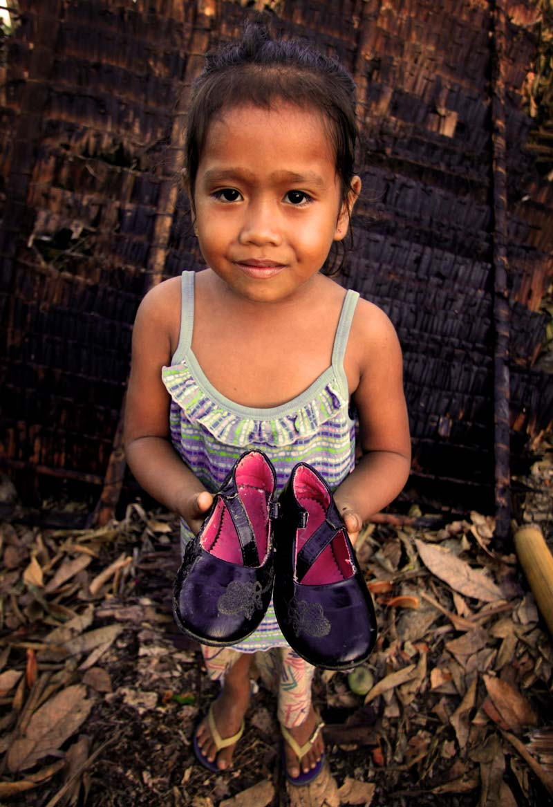

Rebuilding after Typhoon Haiyan
On 8 November 2013, one of the strongest tropical cyclones on record hit the Philippines. Thousands of Compassion supporters gave generously; raising $679,000 to help Filipinos survive the initial disaster and get back on their feet.
The damage
Winds of up to 270 kilometres per hour tore through the central Philippines, completely flattening or partially destroying the homes of over 4000 Compassion assisted children. Five-year-old Michaela’s home never stood a chance. Her family’s small hut, built of timber and bamboo, was perched on the side of a hill overlooking the beautiful Capoocan mountains in Leyte. It was in the direct path of the typhoon.
Fearing for Michaela’s life, her pastor asked her family to shelter at his home, which was built from concrete. But even with sturdier walls surrounding them, the family was terrified. The roar of the wind made talking impossible; all they could do was hold onto one another. Suddenly, with a grating screech, the roof tore off. Yelling for everyone to hide under the table, the pastor urged Michaela and her family towards it as the wind lashed the house. Huddling underneath the table, with the wind howling above them and flying debris crashing all around, Michaela closed her eyes tightly and prayed for the typhoon to be over.
As the hours slowly passed and the wind died down, Michaela’s family’s thoughts kept returning to one thing. What had become of their little house on the hill? Outside, it was like a different world. Once-familiar landmarks like trees and houses were missing, torn away by the typhoon. As they approached the place where their home used to be, Michaela’s little brother was confused. He tugged on their mum’s arm and asked a question that would be repeated many times across the Philippines: “Where’s our house?”
Compassion’s immediate response
In the aftermath of the typhoon, families like Michaela’s built makeshift shanties from whatever materials they could salvage from the rubble. It wasn’t much, but at least it kept the rain off their heads. Hundreds of other Compassion assisted families stayed with relatives in already-crowded houses, unsure if they could ever rebuild their homes and bring normalcy back into their lives.
With a roof, however fragile, over their heads, families turned their attention to the next problem they faced: food. “Even before Haiyan we didn’t have much food,” says Michaela’s mum. “We fed on the vegetables from our garden, but they were all completely destroyed.”
Because of your support, help was on its way. Compassion mobilised more than 107 tonnes of food and other emergency items, like medicine, clothes, blankets and hygiene supplies, assisting more than 7,500 families. The relief it brought was a blessing to many. “I remember one family told me they were just sitting there because the family couldn’t go fishing after [the typhoon],” says Ruby Descartin, Compassion program director at Capstone Generation. “They didn’t have food to eat anymore but the father was surprised when somebody called him and said there are relief goods at church. He cried and said we really cannot limit what God can do.”
One year later
Michaela looks around at her new home, smiling. She runs her hand down the smooth wooden walls. She liked her old home, but this one is better;. it is built from strong materials., Michaela knows that next time, her home will be safe in the storm. As of August 2014, almost 3,000 of the 4,029 homes requiring repairs or reconstruction have been completed. The new homes are bigger and sturdier than before. Some have been elevated to keep floodwaters out, and most were built using iron-sheet roofing and concrete, as opposed to palm leaves or bamboo. Compassion continues to provide support to the 1000 families whose homes still require work.
Thank you
“To our very supportive partners and to our sponsors, we are thankful that after [Typhoon Haiyan] hit us you did not only watch us through television but you saw us and prayed for us; we felt and received the help of our Lord through you,” says Pastor Frederick Rapis of Banga Gospel Church. “Thank you very much, because now, little by little, we have stood back up because you helped us through prayers.”
Words by Edwin Estioko and Zoe Noakes
Photos by Edwin Estioko